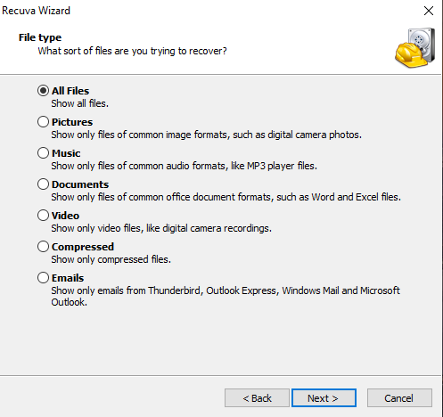
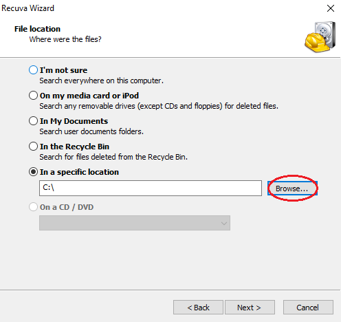
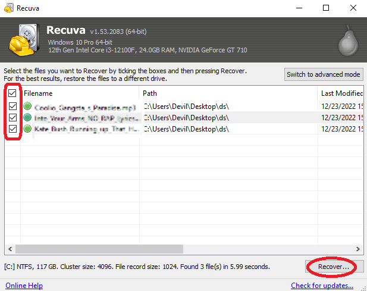

let me guess.. you deleted the file on your computer accidently. or didn't needed it at that time but now you really need it. let me tell you a little story. when i was a kid i had deleted my dad's company data to get more free space. so i can install more games on it. horrible right? but as soon as i realized what i just did i had to find the way to recover those data. so as i begin to find the way to recover i couldn't find a way to recover them. but as i came across this really good software which helped me recover all the deleted files for completely free. we will show you how you can recover the deleted files using this software
through this software you will be able to recover Images, Audio files(such as Mp3), Documents(such as Word and Exel), Video, Compressed files and Emails
Recuva is developed by Piriform Software. the same developers who also made popular software CCleaner. Recuva works on FAT, exFAT and NTFS file systems of Windows 10, 8.1, 7, Vista and XP. for both 32bit and 64bit versions of Windows. unfortunately it isn't supported for Windows 11 yet.
you can download Recuva from here.

once the download has completed. install the setup and open it the software.
when you open the software it will show you Welcome to Recuva page. click on "Next"
now click on the file type that you would like to recover. if you are not sure or had multiple different type of files. and then just click on 'All Files' then click 'Next'
select the file location where were the files last time you deleted them from. check on 'In a specific location' and click on the 'Browse' to select the drive or the directory of the where the files were. after selecting the path click on 'Next' to start the scan. if you are not sure or you want recover files from your entire computer. you can just simply check on the 'I'm not sure'. to scan your entire computer. but keep in mind it may takes anywhere between couple of minutes to hours to complete the scan.
now once the scan has completed. it will show you the files you had deleted or more than that. now select the files you want to recover and click on the 'Recover'
Now your Files have been successfuly recovered and stored in the same files as they were before you deleted them.
If above method didn't work for you and some files were still missing. you can use the "Deep scan" method in recuva which is very effective. but also it may take a time to complete the scan depending on your hard drive perfomance